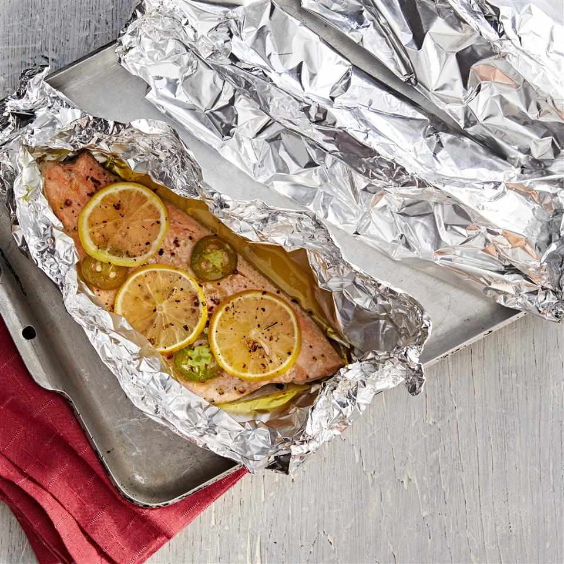

Home Page
Fish in Foil

Ingredients
- 2 rainbow trout fillets
- 1 tablespoon olive oil
- 2 teaspoons garlic salt
- 1 teaspoon ground black pepper
- 2 sheets heavy-duty aluminum foil
- 1 fresh jalapeno pepper, sliced
- 1 lemon, sliced
Directions
- Preheat the oven to 400 degrees F (200 degrees C).
- Rinse and pat fillets dry. Rub fillets with olive oil, and season with garlic salt and
black pepper. Place each fillet on a large sheet of aluminum foil. Top with
jalapeno slices, and squeeze the juice from the ends of the lemon over fillets.
Arrange remaining lemon slices on top of fillets.
- Carefully seal all edges of the foil to form enclosed packets. Place packets on a
baking sheet.
- Bake in the preheated oven until fish flakes easily with a fork, 15 to 20 minutes
depending on size of fillets.